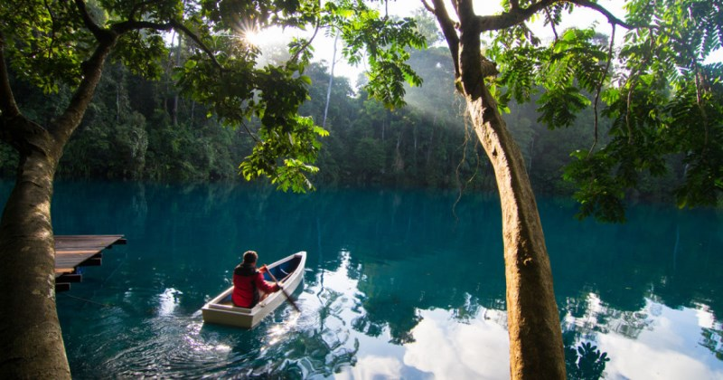

Danau Labuan Cermin
Danau Labuan Cermin terletak di Desa Labuan Kelambu di Kecamatan Biduk-biduk Kalimantan Timur yang bisa ditempuh dengan perjalanan darat sekitar 6 sampai 7 jam dari ibukota Kabupaten Berau, Tanjung Redeb, Kalimantan Timur.
Bukit Rimpi
Bukit Rimpi merupakan sebuah perbukitan yang ditumbuhi oleh padang savana hijau yang dihiasi oleh hamparan rumput

Kepulauan Derawan
Kepulauan Derawan adalah sebuah kepulauan yang berada di Kabupaten Berau, Kalimantan Timur. Di kepulauan ini terdapat sejumlah objek wisata bahari menawan.

Pantai melawai
Pantai melawai menjadi ikon atau tempat nongkrong muda-mudi yang tinggal di Balikpapan serta pariwisata di pulau Kalimantan Indonesia.